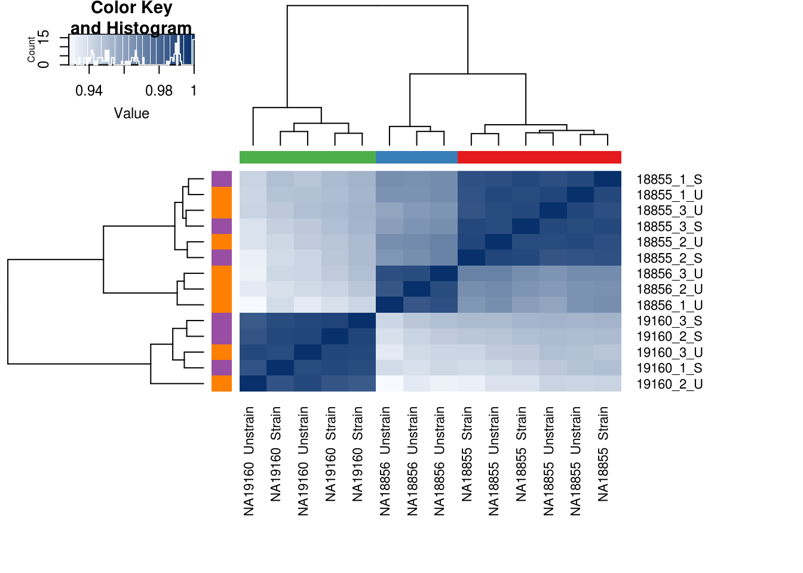
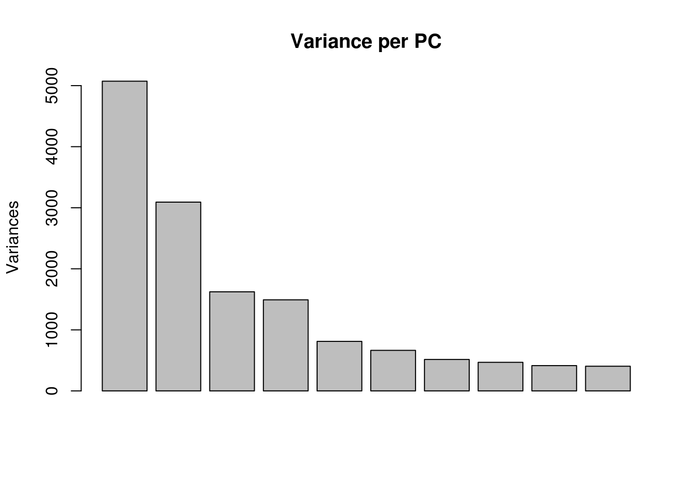
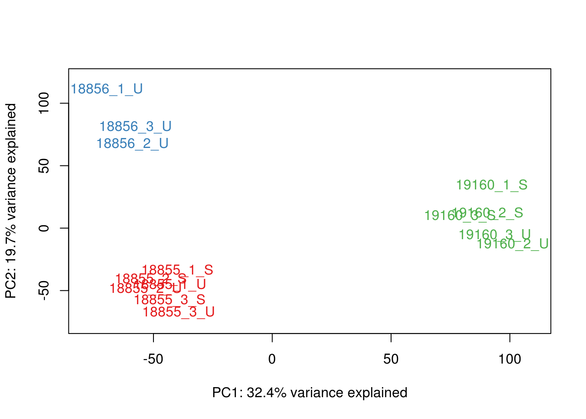
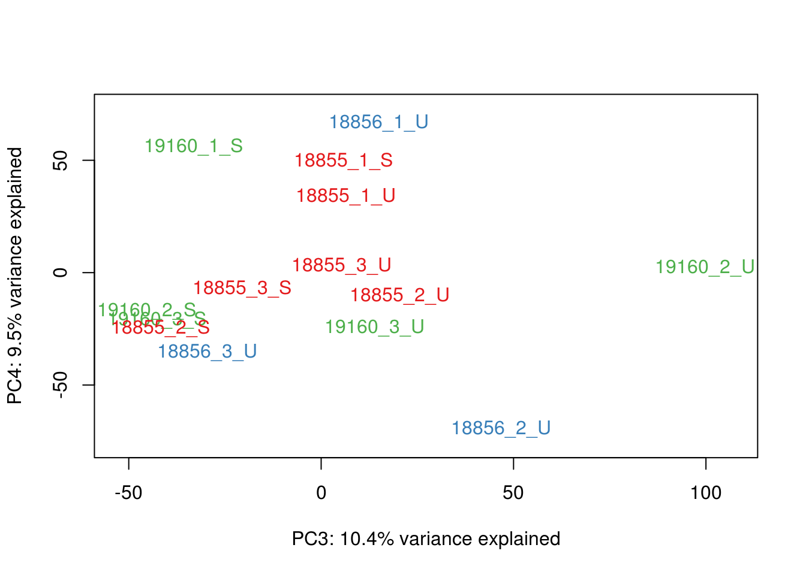
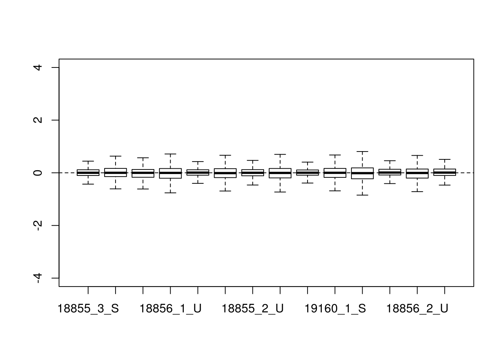
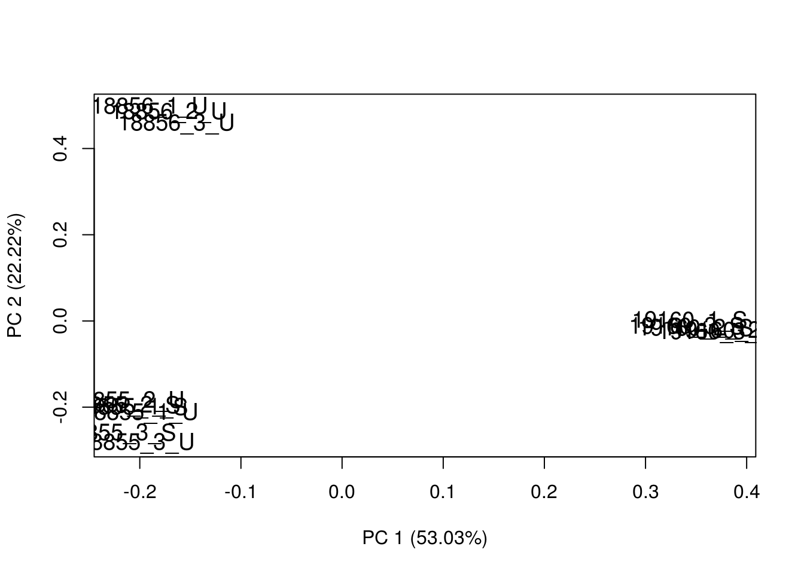

remove_18856_strain
Anthony Hung
2020-01-13
Last updated: 2020-01-13
Checks: 6 1
Knit directory: OAStrain/
This reproducible R Markdown analysis was created with workflowr (version 1.5.0). The Checks tab describes the reproducibility checks that were applied when the results were created. The Past versions tab lists the development history.
The R Markdown is untracked by Git. To know which version of the R Markdown file created these results, you’ll want to first commit it to the Git repo. If you’re still working on the analysis, you can ignore this warning. When you’re finished, you can run wflow_publish to commit the R Markdown file and build the HTML.
Great job! The global environment was empty. Objects defined in the global environment can affect the analysis in your R Markdown file in unknown ways. For reproduciblity it’s best to always run the code in an empty environment.
The command set.seed(20191127) was run prior to running the code in the R Markdown file. Setting a seed ensures that any results that rely on randomness, e.g. subsampling or permutations, are reproducible.
Great job! Recording the operating system, R version, and package versions is critical for reproducibility.
Nice! There were no cached chunks for this analysis, so you can be confident that you successfully produced the results during this run.
Great job! Using relative paths to the files within your workflowr project makes it easier to run your code on other machines.
Great! You are using Git for version control. Tracking code development and connecting the code version to the results is critical for reproducibility. The version displayed above was the version of the Git repository at the time these results were generated.
Note that you need to be careful to ensure that all relevant files for the analysis have been committed to Git prior to generating the results (you can use wflow_publish or wflow_git_commit). workflowr only checks the R Markdown file, but you know if there are other scripts or data files that it depends on. Below is the status of the Git repository when the results were generated:
Ignored files:
Ignored: .Rhistory
Ignored: .Rproj.user/
Ignored: analysis/figure/
Ignored: data/RUVsCPM.rds
Ignored: data/filtered_counts.rds
Ignored: data/norm_filtered_counts.rds
Ignored: data/prime_RUVsCPM.rds
Ignored: data/prime_filtered_counts.rds
Ignored: data/prime_norm_filtered_counts.rds
Ignored: data/prime_raw_counts_relabeled.rds
Ignored: data/raw_counts_relabeled.rds
Untracked files:
Untracked: analysis/remove_18856_strain.Rmd
Untracked: data/prime_Sample.info.RNAseq.reordered.csv
Unstaged changes:
Modified: analysis/DE_analysis.Rmd
Modified: fig-limma-treatment-hit-1.eps
Note that any generated files, e.g. HTML, png, CSS, etc., are not included in this status report because it is ok for generated content to have uncommitted changes.
There are no past versions. Publish this analysis with wflow_publish() to start tracking its development.
Re-do all analyses but remove 18856 Strain
#configuration
proj_dir <- "/project2/gilad/anthonyhung/Projects/OAStrain_project/"
#order of samples to relabel count matrix (sample ID in format 18855_1_S)
#NOTE: NEED TO CHANGE THIS TO MATCH ACTUAL SAMPLE ORDERS
samplenames <- c("18855_3_S","19160_3_S", "18856_3_U",
"18856_1_U","18855_2_S", "18856_2_S",
"19160_3_U","18855_2_U", "19160_2_S",
"18855_1_S","18856_1_S", "19160_1_S",
"19160_2_U","19160_1_U", "18855_1_U",
"18856_3_S","18856_2_U", "18855_3_U"
)Overview:
Here, I load in the raw count matrix that is the output of the Snakemake pipeline and perform PCA and hierarchical clustering to see what patterns can be observed. I then visualize the pairwise correlations between replicates of the same sample, between samples in the same treatment, and samples from the same individual. Based on QC metrics (only 38.4% aligned reads for sample 02), I removed this sample from further analyses.
Load in bulk RNA sequencing data from pilot experiment and visualize correlations between samples
library("gplots")
Attaching package: 'gplots'The following object is masked from 'package:stats':
lowesslibrary("ggplot2")
library("RColorBrewer")
library("scales")
# Load colors
colors <- colorRampPalette(c(brewer.pal(9, "Blues")[1],brewer.pal(9, "Blues")[9]))(100)
pal <- c(brewer.pal(9, "Set1"), brewer.pal(8, "Set2"), brewer.pal(12, "Set3"))
# load in counts
raw_counts <- read.table(paste0(proj_dir, "out/counts/counts.txt"), header = T)
# assign row.names
row.names(raw_counts) <- raw_counts$Geneid
# exclude extra data columns
raw_counts <- raw_counts[, -c(1:6)]
# assign col.names
names(raw_counts) <- samplenames
# remove 02 sample that does not pass QC. Also remove all 18856 Strain
raw_counts <- raw_counts[, -c(6, 11, 14, 16)]
# save relabeled raw count data matrix
saveRDS(raw_counts, "data/prime_raw_counts_relabeled.rds")
# Check that there's no "NAs" in the data
summary(apply(raw_counts, 1, var) == 0) Mode FALSE TRUE
logical 31826 26569 #Sample information
sample_info <- read.csv("data/Sample.info.RNAseq.csv")
head(sample_info) Sample_ID Individual Sex Replicate Passage_MSC treatment RIN LibraryPrepBatch
1 18855_1_S NA18855 F 1 10 Strain 1 1
2 18856_1_S NA18856 M 1 8 Strain 1 1
3 19160_1_S NA19160 M 1 8 Strain 1 1
4 18855_2_S NA18855 F 2 10 Strain 1 1
5 18856_2_S NA18856 M 2 8 Strain 1 1
6 19160_2_S NA19160 M 2 8 Strain 1 1#Re-order sample information to match the columns of count matrix
sample_info <- sample_info[match(samplenames, sample_info$Sample_ID),]
#remove 02 sample that does not pass QC
sample_info <- sample_info[-c(6, 11, 14, 16),]
# save reorganized sample information
saveRDS(sample_info, "data/prime_Sample.info.RNAseq.reordered.csv")Perform PCA and hierarchical clustering on raw data
labels <- paste(sample_info$Individual, sample_info$treatment, sep=" ")
#load PCA function
source("code/PCA_fn.R")
# Clustering (original code from Julien Roux)
cors <- cor(raw_counts, method="spearman", use="pairwise.complete.obs")
heatmap.2(cors, scale="none", col = colors, margins = c(12, 12), trace='none', denscol="white", labCol=labels, ColSideColors=pal[as.integer(as.factor(sample_info$Individual))], RowSideColors=pal[as.integer(as.factor(sample_info$treatment))+3], cexCol = 0.2 + 1/log10(15), cexRow = 0.2 + 1/log10(15))
Perform PCA and color by factors to look for any potential correlations
# Perform PCA
pca_genes <- prcomp(t(raw_counts), scale = F)
scores <- pca_genes$x
#Make PCA plots with the factors colored by individual
### PCs 1 and 2 Raw Data
for (n in 1:1){
col.v <- pal[as.integer(sample_info$Individual)]
plot_scores(pca_genes, scores, n, n+1, col.v)
}
### PCs 3 and 4 Raw Data
for (n in 3:3){
col.v <- pal[as.integer(sample_info$Individual)]
plot_scores(pca_genes, scores, n, n+1, col.v)
}
#Make PCA plots with the factors colored by treatment
### PCs 1 and 2 Raw Data
for (n in 1:1){
col.v <- pal[as.integer(sample_info$treatment)]
plot_scores(pca_genes, scores, n, n+1, col.v)
}
### PCs 3 and 4 Raw Data
for (n in 3:3){
col.v <- pal[as.integer(sample_info$treatment)]
plot_scores(pca_genes, scores, n, n+1, col.v)
}
Perform cpm normalization of raw count data and filtering of lowly expressed genes
library("gplots")
library("ggplot2")
library("reshape")
library("edgeR")Loading required package: limmalibrary("RColorBrewer")
library("scales")
library("cowplot")
Attaching package: 'cowplot'The following object is masked from 'package:ggplot2':
ggsavelibrary("dplyr")
Attaching package: 'dplyr'The following object is masked from 'package:reshape':
renameThe following objects are masked from 'package:stats':
filter, lagThe following objects are masked from 'package:base':
intersect, setdiff, setequal, union# Load colors
colors <- colorRampPalette(c(brewer.pal(9, "Blues")[1],brewer.pal(9, "Blues")[9]))(100)
pal <- c(brewer.pal(9, "Set1"), brewer.pal(8, "Set2"), brewer.pal(12, "Set3"))
# load in relabeled counts
raw_counts <- readRDS("data/prime_raw_counts_relabeled.rds")
# load in reordered sample information
sampleinfo <- readRDS("data/prime_Sample.info.RNAseq.reordered.csv")Perform cpm normalization on all counts and plot density plots
cpm <- cpm(raw_counts, log=TRUE)
head(cpm) 18855_3_S 19160_3_S 18856_3_U 18856_1_U 18855_2_S 19160_3_U
ENSG00000223972 -6.166304 -6.166304 -6.166304 -6.166304 -6.166304 -6.166304
ENSG00000227232 -1.871261 -2.778962 -3.010790 -3.887901 -3.863550 -6.166304
ENSG00000278267 -6.166304 -6.166304 -6.166304 -6.166304 -6.166304 -6.166304
ENSG00000243485 -6.166304 -6.166304 -6.166304 -6.166304 -6.166304 -6.166304
ENSG00000284332 -6.166304 -6.166304 -6.166304 -6.166304 -6.166304 -6.166304
ENSG00000237613 -6.166304 -6.166304 -6.166304 -6.166304 -6.166304 -6.166304
18855_2_U 19160_2_S 18855_1_S 19160_1_S 19160_2_U 18855_1_U
ENSG00000223972 -6.166304 -6.166304 -6.166304 -6.166304 -6.166304 -6.166304
ENSG00000227232 -3.886123 -1.667847 -1.902029 -3.194257 -4.018231 -1.681588
ENSG00000278267 -6.166304 -6.166304 -6.166304 -6.166304 -6.166304 -6.166304
ENSG00000243485 -6.166304 -6.166304 -6.166304 -6.166304 -6.166304 -6.166304
ENSG00000284332 -6.166304 -6.166304 -6.166304 -6.166304 -6.166304 -6.166304
ENSG00000237613 -6.166304 -6.166304 -6.166304 -6.166304 -6.166304 -6.166304
18856_2_U 18855_3_U
ENSG00000223972 -6.166304 -6.166304
ENSG00000227232 -2.237549 -6.166304
ENSG00000278267 -6.166304 -6.166304
ENSG00000243485 -6.166304 -6.166304
ENSG00000284332 -6.166304 -6.166304
ENSG00000237613 -6.166304 -6.166304strained <- sampleinfo$treatment == "Strain"
unstrained <- sampleinfo$treatment == "Unstrain"
ind_1 <- sampleinfo$Individual == "NA18855 "
ind_2 <- sampleinfo$Individual == "NA18856 "
ind_3 <- sampleinfo$Individual == "NA19160 "
# Look at density plots for all individuals broken down by each treatment type
col = as.data.frame(pal[as.numeric(sampleinfo$Individual)])
plotDensities(cpm[,strained], col=col[strained, ], legend="topright")
plotDensities(cpm[,unstrained], col=col[unstrained, ], legend="topright")
# Look at density plots broken down by individual
col = as.data.frame(pal[as.numeric(sampleinfo$treatment)])
plotDensities(cpm[,ind_1], col=col[ind_1, ], legend="topright")
plotDensities(cpm[,ind_2], col=col[ind_2, ], legend="topright")
plotDensities(cpm[,ind_3], col=col[ind_3, ], legend="topright")
Boxplots of cpm across samples
meltcpm <- melt(cpm)
names(meltcpm) <- c("gene", "sampleID", "cpm")
p <- ggplot(meltcpm, aes(factor(sampleID), cpm))
p + geom_boxplot() + theme(axis.text.x = element_text(angle = 90))
Filtering for lowly expressed genes (avg CPM > 0.5 in at least 2 samples)
cutoff <- 0.5
keep <- rowSums( cpm(raw_counts, log=FALSE) > 0.5 ) >=2
counts <- raw_counts[keep,]
filtered_cpm <- cpm(counts, log = T)Boxplots of normalized+filtered counts across samples
melt_filt_cpm <- melt(filtered_cpm)
names(melt_filt_cpm) <- c("gene", "sampleID", "log2cpm")
p1 <- ggplot(melt_filt_cpm, aes(factor(sampleID), log2cpm))
p1 + geom_boxplot() + theme(axis.text.x = element_text(angle = 90))
Save normalized/filtered count matrix and filtered count matrix
saveRDS(counts, "data/prime_filtered_counts.rds")
saveRDS(filtered_cpm, "data/prime_norm_filtered_counts.rds")Examine normalized/filtered data and see if any PCs correlate with technical factors
library("gplots")
library("ggplot2")
library("reshape")
library("edgeR")
library("RColorBrewer")
library("scales")
library("cowplot")
library("DT")
library("tidyr")
Attaching package: 'tidyr'The following objects are masked from 'package:reshape':
expand, smithslibrary("RUVSeq")Loading required package: BiobaseLoading required package: BiocGenericsLoading required package: parallel
Attaching package: 'BiocGenerics'The following objects are masked from 'package:parallel':
clusterApply, clusterApplyLB, clusterCall, clusterEvalQ,
clusterExport, clusterMap, parApply, parCapply, parLapply,
parLapplyLB, parRapply, parSapply, parSapplyLBThe following objects are masked from 'package:dplyr':
combine, intersect, setdiff, unionThe following object is masked from 'package:limma':
plotMAThe following objects are masked from 'package:stats':
IQR, mad, sd, var, xtabsThe following objects are masked from 'package:base':
anyDuplicated, append, as.data.frame, cbind, colMeans, colnames,
colSums, do.call, duplicated, eval, evalq, Filter, Find, get, grep,
grepl, intersect, is.unsorted, lapply, lengths, Map, mapply, match,
mget, order, paste, pmax, pmax.int, pmin, pmin.int, Position, rank,
rbind, Reduce, rowMeans, rownames, rowSums, sapply, setdiff, sort,
table, tapply, union, unique, unsplit, which, which.max, which.minWelcome to Bioconductor
Vignettes contain introductory material; view with
'browseVignettes()'. To cite Bioconductor, see
'citation("Biobase")', and for packages 'citation("pkgname")'.Loading required package: EDASeqLoading required package: ShortReadLoading required package: BiocParallelLoading required package: BiostringsLoading required package: S4VectorsLoading required package: stats4
Attaching package: 'S4Vectors'The following object is masked from 'package:tidyr':
expandThe following objects are masked from 'package:dplyr':
first, renameThe following objects are masked from 'package:reshape':
expand, renameThe following object is masked from 'package:gplots':
spaceThe following object is masked from 'package:base':
expand.gridLoading required package: IRanges
Attaching package: 'IRanges'The following objects are masked from 'package:dplyr':
collapse, desc, sliceLoading required package: XVector
Attaching package: 'Biostrings'The following object is masked from 'package:base':
strsplitLoading required package: RsamtoolsLoading required package: GenomeInfoDbLoading required package: GenomicRangesLoading required package: GenomicAlignmentsLoading required package: SummarizedExperimentLoading required package: DelayedArrayLoading required package: matrixStats
Attaching package: 'matrixStats'The following objects are masked from 'package:Biobase':
anyMissing, rowMediansThe following object is masked from 'package:dplyr':
count
Attaching package: 'DelayedArray'The following objects are masked from 'package:matrixStats':
colMaxs, colMins, colRanges, rowMaxs, rowMins, rowRangesThe following object is masked from 'package:Biostrings':
typeThe following object is masked from 'package:base':
apply
Attaching package: 'GenomicAlignments'The following object is masked from 'package:dplyr':
last
Attaching package: 'ShortRead'The following object is masked from 'package:dplyr':
idlibrary("dplyr")
# Load colors
colors <- colorRampPalette(c(brewer.pal(9, "Blues")[1],brewer.pal(9, "Blues")[9]))(100)
pal <- c(brewer.pal(9, "Set1"), brewer.pal(8, "Set2"), brewer.pal(12, "Set3"))
#load in normalized/filtered data
filt_cpm <- readRDS("data/prime_norm_filtered_counts.rds")
#load in filtered counts
filt_counts <- readRDS("data/prime_filtered_counts.rds")
# load in reordered sample information
sampleinfo <- readRDS("data/prime_Sample.info.RNAseq.reordered.csv")PCA and hierarchical clustering of normalized and filtered data
#Load PCA plotting Function
source("code/PCA_fn.R")
# Clustering (original code from Julien Roux)
cors <- cor(filt_cpm, method="spearman", use="pairwise.complete.obs")
labels <- paste(sampleinfo$Individual, sampleinfo$treatment, sep=" ")
heatmap.2( cors, scale="none", col = colors, margins = c(12, 12), trace='none', denscol="white", labCol=labels, ColSideColors=pal[as.integer(as.factor(sampleinfo$Individual))], RowSideColors=pal[as.integer(as.factor(sampleinfo$treatment))+3], cexCol = 0.2 + 1/log10(15), cexRow = 0.2 + 1/log10(15))
Perform PCA and color by factors to look for any potential correlations
# Perform PCA
pca_genes <- prcomp(t(filt_cpm), scale = T)
scores <- pca_genes$x
variances <- pca_genes$sdev^2
explained <- variances / sum(variances)
plot(pca_genes, main = "Variance per PC")
#Make PCA plots with the factors colored by Individual
### PCs 1 and 2 norm+filt Data
for (n in 1:1){
col.v <- pal[as.integer(sampleinfo$Individual)]
plot_scores(pca_genes, scores, n, n+1, col.v)
}
### PCs 3 and 4 norm+filt Data
for (n in 3:3){
col.v <- pal[as.integer(sampleinfo$Individual)]
plot_scores(pca_genes, scores, n, n+1, col.v)
}
Check that technical factors do not correlate with PCs
# Calculate the relationship between each recorded covariate and the top 6 PCs.
p_comps <- 1:6
info <- sampleinfo %>%
dplyr::select(c(Individual, Sex, Replicate, Passage_MSC, treatment, RIN, LibraryPrepBatch)) #subset sample info for technical/biological variables
#Calculate correlations
pc_cov_cor <- matrix(nrow = ncol(info), ncol = length(p_comps),
dimnames = list(colnames(info), colnames(pca_genes$x)[p_comps]))
for (pc in p_comps) {
for (covariate in 1:ncol(info)) {
lm_result <- lm(pca_genes$x[, pc] ~ info[, covariate])
r2 <- summary(lm_result)$r.squared
pc_cov_cor[covariate, pc] <- r2
}
}
datatable(pc_cov_cor) #Convert to long format to plot in ggplot2
pc_cov_cor_2 <- as.data.frame(pc_cov_cor)
pc_cov_cor_2$variable <- rownames(pc_cov_cor)
pc_cov_cor_2 <- gather(pc_cov_cor_2, key = "pc", value = "cor", -variable)
head(pc_cov_cor_2) variable pc cor
1 Individual PC1 0.99218918
2 Sex PC1 0.32326727
3 Replicate PC1 0.01457549
4 Passage_MSC PC1 0.17401893
5 treatment PC1 0.07163474
6 RIN PC1 0.00000000#Plot heatmap
d_heatmap <- pc_cov_cor_2
d_heatmap$variable <- factor(d_heatmap$variable,
levels = c("Individual", "Sex", "Replicate",
"Passage_MSC", "treatment", "RIN", "LibraryPrepBatch"),
labels = c("Individual", "Sex", "Replicate",
"Passage_MSC", "treatment", "RIN", "LibraryPrepBatch"))
pca_heat <- ggplot(d_heatmap, aes(x = pc, y = variable)) +
geom_tile(aes(fill = cor), colour = "white") +
scale_fill_gradient(low = "white", high = "red", limits = c(0, 1)) +
labs(x = "Principal Component", y = "",
title = "Correlation between principal components and experimental variables")
pca_heat
Remove unwanted variation using RUVSeq
#The RUVSeq vignette loads raw counts and uses the RUVSeq package to filter and normalize data (upper quantile normalization) before performing RUVs.
#Use RUVs (replicates) and adjust k until corr heatmap looks right
replicates <- makeGroups(paste0(sampleinfo$Individual, sampleinfo$treatment))
x <- paste0(sampleinfo$Individual, sampleinfo$treatment)
#load data into expressionset
set <- newSeqExpressionSet(as.matrix(filt_counts),
phenoData = data.frame(sampleinfo, row.names=colnames(filt_cpm)))
setSeqExpressionSet (storageMode: lockedEnvironment)
assayData: 15663 features, 14 samples
element names: counts, normalizedCounts, offset
protocolData: none
phenoData
sampleNames: 18855_3_S 19160_3_S ... 18855_3_U (14 total)
varLabels: Sample_ID Individual ... LibraryPrepBatch (8 total)
varMetadata: labelDescription
featureData: none
experimentData: use 'experimentData(object)'
Annotation: #normalization
set <- betweenLaneNormalization(set, which="upper")
set1 <- RUVs(set, rownames(filt_counts), k=1, replicates)
pData(set1) Sample_ID Individual Sex Replicate Passage_MSC treatment RIN
18855_3_S 18855_3_S NA18855 F 3 11 Strain 1
19160_3_S 19160_3_S NA19160 M 3 9 Strain 1
18856_3_U 18856_3_U NA18856 M 3 8 Unstrain 1
18856_1_U 18856_1_U NA18856 M 1 8 Unstrain 1
18855_2_S 18855_2_S NA18855 F 2 10 Strain 1
19160_3_U 19160_3_U NA19160 M 3 9 Unstrain 1
18855_2_U 18855_2_U NA18855 F 2 10 Unstrain 1
19160_2_S 19160_2_S NA19160 M 2 8 Strain 1
18855_1_S 18855_1_S NA18855 F 1 10 Strain 1
19160_1_S 19160_1_S NA19160 M 1 8 Strain 1
19160_2_U 19160_2_U NA19160 M 2 8 Unstrain 1
18855_1_U 18855_1_U NA18855 F 1 10 Unstrain 1
18856_2_U 18856_2_U NA18856 M 2 8 Unstrain 1
18855_3_U 18855_3_U NA18855 F 3 11 Unstrain 1
LibraryPrepBatch W_1
18855_3_S 2 0.003377339
19160_3_S 2 0.068815124
18856_3_U 2 0.266999003
18856_1_U 1 -0.346905251
18855_2_S 1 0.393594510
19160_3_U 2 -0.165982945
18855_2_U 1 0.256925938
19160_2_S 1 -0.192461353
18855_1_S 1 -0.390089354
19160_1_S 1 -0.648901220
19160_2_U 1 -0.525727306
18855_1_U 1 -0.285159570
18856_2_U 1 0.109416232
18855_3_U 2 -0.159350266#Plots after correcting RUV
plotRLE(set1, outline=FALSE, ylim=c(-4, 4), col=colors[x])
plotPCA(set1, col=colors[x], cex=1.2)
# # Clustering (original code from Julien Roux)
cors <- cor(set1@assayData$normalizedCounts, method="spearman", use="pairwise.complete.obs")
labels <- paste(sampleinfo$Individual, sampleinfo$treatment, sep=" ")
heatmap.2( cors, scale="none", col = colors, margins = c(12, 12), trace='none', denscol="white", labCol=labels, ColSideColors=pal[as.integer(as.factor(sampleinfo$Individual))], RowSideColors=pal[as.integer(as.factor(sampleinfo$treatment))+3], cexCol = 0.2 + 1/log10(15), cexRow = 0.2 + 1/log10(15))“The RUVg function returns two pieces of information: the estimated factors of unwanted variation (added as columns to the phenoData slot of set) and the normalized counts obtained by regressing the original counts on the unwanted factors. The normalized values are stored in the normalizedCounts slot of set and can be accessed with the normCounts method. These counts should be used only for exploration. It is important that subsequent DE analysis be done on the original counts (accessible through the counts method), as removing the unwanted factors from the counts can also remove part of a factor of interest [6].”
Save data and RUVs output for unwanted variation (contains the same cpm data as before as well as pheno data, W_1 values from RUVs)
saveRDS(set1, "data/prime_RUVsCPM.rds")Build boxplots comparing expression (CPM) of different genes between strain and unstrain samples
Check chondro/msc markers for absolute expression strain markers boxplot comparisons
library(ggplot2)
#load in normalized/filtered data
filt_cpm <- readRDS("data/prime_norm_filtered_counts.rds")
# load in reordered sample information
sampleinfo <- readRDS("data/prime_Sample.info.RNAseq.reordered.csv")Define functions to plot boxplot of results
#Inputs: count matrix, sample information data frame, and gene of interest in the ENSG format
get_gene_long <- function(counts, info, gene){
gene_counts <- as.data.frame(counts[gene,])
names(gene_counts) <- "CPM"
gene_counts_info <- cbind(gene_counts, info)
return(gene_counts_info)
}
boxplot_gene_treatment <- function(counts_, info_, gene_, name){
df <- get_gene_long(counts = counts_, info = info_, gene = gene_)
ggplot(df, aes(x = treatment, y = CPM, color = info_$Individual)) +
geom_boxplot() +
labs(title=paste0("Expression of ", as.character(name), " by treatment"), x= "Treatment", y = "log2 Counts per million reads")
}Compare expression of strain markers between samples
#MMP1, MMP3, MMP13, IL1B, TNF, IBSP, MMP9 were filtered out
#MMP2
boxplot_gene_treatment(filt_cpm, sampleinfo, "ENSG00000087245", "MMP2")
#TIMP2
boxplot_gene_treatment(filt_cpm, sampleinfo, "ENSG00000035862", "TIMP2")
#COMP
boxplot_gene_treatment(filt_cpm, sampleinfo, "ENSG00000105664", "COMP")
#TIMP1
boxplot_gene_treatment(filt_cpm, sampleinfo, "ENSG00000102265", "TIMP1")
#ADAMTS4
boxplot_gene_treatment(filt_cpm, sampleinfo, "ENSG00000158859", "ADAMTS4")
#ADAMTS5e
boxplot_gene_treatment(filt_cpm, sampleinfo, "ENSG00000154736", "ADAMTS5")
#Chond Markers
#ACAN was filtered out
#COL2A1
boxplot_gene_treatment(filt_cpm, sampleinfo, "ENSG00000139219", "COL2A1")
#COL10A1
boxplot_gene_treatment(filt_cpm, sampleinfo, "ENSG00000123500", "COL10A1")
#SOX9
boxplot_gene_treatment(filt_cpm, sampleinfo, "ENSG00000125398", "SOX9")
#COL11A1
boxplot_gene_treatment(filt_cpm, sampleinfo, "ENSG00000060718", "COL11A1")
#SOX5
boxplot_gene_treatment(filt_cpm, sampleinfo, "ENSG00000134532", "SOX5")
#SOX6
boxplot_gene_treatment(filt_cpm, sampleinfo, "ENSG00000110693", "SOX6")
#TGFB3
boxplot_gene_treatment(filt_cpm, sampleinfo, "ENSG00000119699", "TGFB3")
#MSC Markers
#CD34, ITGAM, CD79A, CD19, CD14 filtered out
#ENG
boxplot_gene_treatment(filt_cpm, sampleinfo, "ENSG00000106991", "ENG (CD105)")
#THY1
boxplot_gene_treatment(filt_cpm, sampleinfo, "ENSG00000154096", "THY1 (CD90)")
#NT5E
boxplot_gene_treatment(filt_cpm, sampleinfo, "ENSG00000135318", "NT5E (CD73)")
#PTPRC
boxplot_gene_treatment(filt_cpm, sampleinfo, "ENSG00000081237", "PTPRC")
sessionInfo()R version 3.4.3 (2017-11-30)
Platform: x86_64-pc-linux-gnu (64-bit)
Running under: Scientific Linux 7.4 (Nitrogen)
Matrix products: default
BLAS/LAPACK: /software/openblas-0.2.19-el7-x86_64/lib/libopenblas_haswellp-r0.2.19.so
locale:
[1] LC_CTYPE=en_US.UTF-8 LC_NUMERIC=C
[3] LC_TIME=en_US.UTF-8 LC_COLLATE=en_US.UTF-8
[5] LC_MONETARY=en_US.UTF-8 LC_MESSAGES=en_US.UTF-8
[7] LC_PAPER=en_US.UTF-8 LC_NAME=C
[9] LC_ADDRESS=C LC_TELEPHONE=C
[11] LC_MEASUREMENT=en_US.UTF-8 LC_IDENTIFICATION=C
attached base packages:
[1] stats4 parallel stats graphics grDevices utils datasets
[8] methods base
other attached packages:
[1] RUVSeq_1.12.0 EDASeq_2.12.0
[3] ShortRead_1.36.1 GenomicAlignments_1.14.2
[5] SummarizedExperiment_1.8.1 DelayedArray_0.4.1
[7] matrixStats_0.55.0 Rsamtools_1.30.0
[9] GenomicRanges_1.30.3 GenomeInfoDb_1.14.0
[11] Biostrings_2.46.0 XVector_0.18.0
[13] IRanges_2.12.0 S4Vectors_0.16.0
[15] BiocParallel_1.12.0 Biobase_2.38.0
[17] BiocGenerics_0.24.0 tidyr_1.0.0
[19] DT_0.10 dplyr_0.8.3
[21] cowplot_0.9.3 edgeR_3.20.9
[23] limma_3.34.9 reshape_0.8.8
[25] scales_1.1.0 RColorBrewer_1.1-2
[27] ggplot2_3.2.1 gplots_3.0.1.1
loaded via a namespace (and not attached):
[1] colorspace_1.4-1 hwriter_1.3.2 ellipsis_0.3.0
[4] rprojroot_1.3-2 fs_1.3.1 farver_2.0.1
[7] bit64_0.9-7 AnnotationDbi_1.40.0 splines_3.4.3
[10] R.methodsS3_1.7.1 DESeq_1.30.0 geneplotter_1.56.0
[13] knitr_1.26 zeallot_0.1.0 jsonlite_1.6
[16] workflowr_1.5.0 annotate_1.56.2 R.oo_1.23.0
[19] shiny_1.4.0 compiler_3.4.3 httr_1.4.1
[22] backports_1.1.5 fastmap_1.0.1 assertthat_0.2.1
[25] Matrix_1.2-18 lazyeval_0.2.2 later_1.0.0
[28] htmltools_0.4.0 prettyunits_1.0.2 tools_3.4.3
[31] gtable_0.3.0 glue_1.3.1 GenomeInfoDbData_1.0.0
[34] Rcpp_1.0.3 vctrs_0.2.0 gdata_2.18.0
[37] rtracklayer_1.38.3 crosstalk_1.0.0 xfun_0.11
[40] stringr_1.4.0 mime_0.7 lifecycle_0.1.0
[43] gtools_3.8.1 XML_3.98-1.20 zlibbioc_1.24.0
[46] MASS_7.3-51.4 aroma.light_3.8.0 hms_0.5.2
[49] promises_1.1.0 yaml_2.2.0 memoise_1.1.0
[52] biomaRt_2.34.2 latticeExtra_0.6-28 stringi_1.4.3
[55] RSQLite_2.1.4 genefilter_1.60.0 RMySQL_0.10.17
[58] GenomicFeatures_1.30.3 caTools_1.17.1.3 rlang_0.4.2
[61] pkgconfig_2.0.3 bitops_1.0-6 evaluate_0.14
[64] lattice_0.20-35 purrr_0.3.3 htmlwidgets_1.5.1
[67] labeling_0.3 bit_1.1-14 tidyselect_0.2.5
[70] plyr_1.8.4 magrittr_1.5 R6_2.4.1
[73] DBI_1.0.0 pillar_1.4.2 withr_2.1.2
[76] survival_2.41-3 RCurl_1.95-4.12 tibble_2.1.3
[79] crayon_1.3.4 KernSmooth_2.23-15 rmarkdown_1.18
[82] progress_1.2.2 locfit_1.5-9.1 grid_3.4.3
[85] blob_1.2.0 git2r_0.26.1 digest_0.6.23
[88] xtable_1.8-4 httpuv_1.5.2 R.utils_2.9.2
[91] munsell_0.5.0